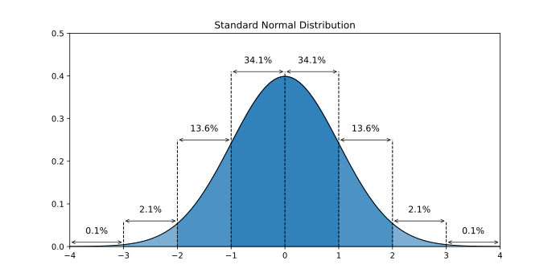
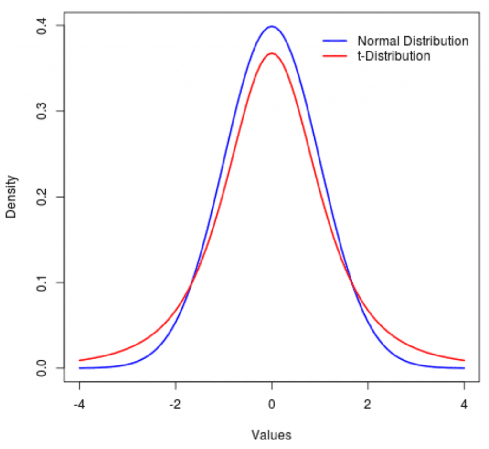

This lesson covers the following topics:
- A brief introduction to statistics and econometrics, and why we care about them as social scientists.
- An introduction to random variables and distributions.
- Key concepts of expected value and variance.
- The normal distribution and t-distribution.
1.1.1: Introduction to Statistics and Econometrics
Why do we care about statistics and econometrics as social scientists?
We care because the social sciences are about creating hypotheses about social phenomena, and then testing these hypotheses with real-world data.
In the past, a lot of social science was qualitative based - interviews, anecdotes, personal experiences. However, there are a series of weaknesses with qualitative based methods.
- Time consuming and difficult to expand: it takes a lot of time to run ethnographies, interviews, and other qualitative methods. This makes it difficult to get large amounts of data.
- Hard to extrapolate: it is hard to generalise our findings in qualitative research. After all, how can we be confident our results will be consistent with the greater population, outside of the people we researched?
- Subjective: often times, qualitative research is very subjective, and prone to manipulation/misunderstanding.
During the last century, the social sciences have increasingly turned towards quantitative methods utilising statistics and econometrics. This has been pioneered by economics, and the other social science disciplines have followed behind.
While statistical methods are not a magical solution to everything, they do allow some benefits:
- Generalisability: Statistical inference allows us to determine how our findings with a small sample, can be generalised more widely.
- More objective: while data can be manipulated and misinterpreted, it is less objective than words and qualitative research.
- More data: data in numerical form is much more easier to collect on a large scale, especially in the modern day, where governments and businesses collect tons and tons of data that can be analysed.
- New methods to deal with traditional weaknessess: traditionally, statistics had the downside of not being able to analyse some types of data, such as textual data. However, with the development of new methods in machine learning, now, we can even run analyses on traditionally inaccessible data forms.
Thus, statistical and econometric method have become the norm (and even dominant) in some social science disciplines. In political science specifically, quantitative research now dominates academia.
This guide is on statistical and econometric theory - it aims to introduce the important background concepts required for statistical analysis of data.
- This course is not on applied methods - the subsequent guides following this will apply the theory learned in this guide to research methods and designs.
The entire guide takes the following form:
- We will start by discusses the fundamentals of statistics needed before approaching more advanced topics.
- Then, we will discuss the linear regression model, arguably the most important method in all of statistics and quantitative research.
- Finally, we will finish by introducing additional methods that solve some of the weaknesses of the linear regression model.
Without further to do, let us begin with some basic statistical concepts.
1.1.2: Random Variables and Distributions
In statistics, we will talk a lot about random variables.
Random variables are events that have some randomness/uncertainty in their outcomes:
- For example, if you flip a coin, you could get heads or tails.
- For example, if you roll a dice, you could get one of 6 different outcomes.
- For example, if you selected a person at random from the US, you would get different values for their salary for different people.
- For example, if you selected a person at random in the US, you would get different values for their age.
The key point here is randomness: each event’s outcome is uncertain.
- This is often used for describing events that have not yet happened, so we are unsure what we will happen.
While these events are random (we do not know what will happen), we often will know at what probability things will happen.
- For example, if you flip a coin, you know you have a 50% chance of getting heads, and 50% chance of getting tails.
- For example, if you roll a dice, you know you have a 1/6 chance of getting any side.
We can represent the potential outcomes of random variables, and the associated probabilities with each outcome, in a distribution.
For example, take rolling a dice. There are 6 potential outcomes (each side). Each side has a probability of 1/6 occuring when we roll the dice.
We can plot this distribution in a graph - the horizontal axis will consist of different outcomes, and the vertical axis will contain the probabilities associated with each outcome:
We can do this with any random variable - plot the distribution of potential outcomes and their associated probabilities.
1.1.3: Probability Mass and Density Functions
There are two types of random variables/distributions:
- Continuous Random Variables: These can take any value on the real number line, including 1, 8, 3.34327378.
- Discrete Random Variables: These can only take a certain set of values. For example, a dice can only take the values of 1, 2, 3, 4, 5 or 6, and cannot take the value of 3.23478.
We can describe a random variable with a Probability Mass/Density Function.
- Probability Mass Functions are used for Discrete Random Variables, and Probability Density Functions are used for continuous variables.
A Probability Mass/Density Function is a function that takes potential outcomes as inputs, and outputs the probability of that potential outcome.
For example, take the probability mass function of a dice. The inputs of the function can be the potential outcomes of rolling a dice, such as 1, 2, 3, 4, 5 or 6. The outputs of the function will be the associated probability with the outcome you input.
- For example, if you input 3 into a die’s probability mass function, the output would be 1/6, since there is a 1/6 probability the outcome 3 occurs when rolling a dice.
More formally, we can define the probability mass function of a dice as:
p(x) = 1/6
- Since no matter what input you put in (1, 2, 3, 4, 5, 6), you will have a 1/6 chance of getting that outcome.
For a continuous variable, we will use a probability density function. Unlike the probability density function, where we input one potential outcome, the probability mass function takes a range of potential outcomes as its input.
- Why? Well since continuous random variables are continuous, it does not make sense to calculate the probability of one specific outcome.
- For example, it makes no sense to want to know the probability of outcome 1.34374827389.
- Instead, we are interested in the probability of an outcome being in a certain range, like 1 to 1.2.
An example: imagine your random variable is how long it will take for you to get to school today.
- This is random, since based on traffic/road/transport conditions, it could take longer or shorter.
- We don’t really care about the probability of it taking exactly 13.47372 minutes to get to school, that means little.
- But what we do care is about the probability of getting to school within a range, let us say 13-14 minutes.
More formally, if we are interested in the the probability of an outcome between a and b occurring, our probability density function is:
\int\limits_a^bf(x) dx
Why an integral? Well because the area under the curve in a distribution is its probability. For example, in the figure below, the chance of an outcome between a and b occurring is the area under the probability distribution curve.
1.1.4: Expected Value and Mean
With random distributions, we are unsure of what outcome we will get. However, we often want to be able to describe the “likely” outcome “on average” we would get from the random outcome.
- For example, we do not know how long it will take to get to school tomorrow. But, we can “best guess” the time to get to school tomorrow through the average of how long it has taken to get to school in the past.
The expected value, also called expectation, mean, or average, is the statistically best guess of the value of a random distribution without any other information.
Expected Value of a variable x is defined by the following:
E(x) = \frac{1}{n}\sum\limits_{i=1}^n x_i
- Where n is the total number of observations in variable x, and observations can be labelled starting from 1, ..., n.
- Where x_i is the value of x for the ith observation.
Notation Note: We can express the expected value of a variable x in many ways, including E(x), \mu_x, and \bar{x}.
More intuitively, the expected value is calculated by:
- Sum all of the values of a variable.
- Divide the sum by the number of observations in that variable.
There are also other formulas to calculate the expected value of a variable.
For a discrete random variable x, the expected value is:
E(x) = \sum\limits_{i=1}^n (x_i \times p(x_i))
- Where x_i is the value of the potential outcome, and p(x_i) is the probability associated with that specific random outcome (obtained from the probability mass function p(x)).
For a continuous random variable x, the expected value is:
E(x) = \int\limits_{-∞}^∞(x \times f(x))dx
- Where f(x) is the function within the probability density function \int\limits_a^b f(x)dx.
We know the probability mass function of a dice is:
p(x) = 1/6
And thus, we know the expected value of a die is:
\begin{split} E(x) & = \sum\limits_{i=1}^n (x_i \times p(x_i)) \\ & = (1 \times \frac{1}{6}) + (2 \times \frac{1}{6}) + (3\times \frac{1}{6}) + (4\times \frac{1}{6})+ (5\times \frac{1}{6}) + (6\times \frac{1}{6}) \\ & = \frac{1}{6}(1+2+3+4+5+6) \\ & = 3.5 \end{split}
Thus, if we roll a dice, we on average get an outcome of 3.5
1.1.5: Variance and Standard Deviation
Expected value is a useful summary of random variables - but it doesn’t tell us everyting.
- Expected value tells us the “centre” or likely value of a random distribution is.
- But, it does not tell us how spread out that distribution is.
For example, let us take two simple random variables (with each outcome having the same probability)
- Random variable 1 has two potential outcomes: 4 and 6
- Random variable 2 has two potential outcomes: 0 and 10
Both variables have the same expected value of 5. However, these random variables are clearly not the same - the second variable is clearly more “spread out”.
We can measure spread with the variance of a distribution.
The variance of a random variable x is:
\begin{split} Var(x) & = E(x - \mu)^2 \\ & = \frac{1}{n}\sum\limits_{i=1}^n(x_i - \bar{x})^2 \end{split}
- Where \mu and \bar{x} are the expected value of random variable x.
Notation Note: Variance can be notated as Var(x) or \sigma^2.
More intuitively, we can calculate variance as follows:
- Take any specific value of x, and subtract the mean of x from that.
- Square that difference.
- Now do that same difference and squaring for every value of x
- Sum up all of those values.
- Divide that sum by the number of observations.
We can see that basically, variance measures the expected distance of every observation of x from the mean of x.
The standard deviation is another parameter, that is simply the square root of variance:
\sigma = \sqrt{Var(x)}
1.1.6: The Normal Distribution
The most common random variable distribution is the Normal Distribution, and a distribution we will use a lot.
The normal distribution is a distribution for continuous random variables, and takes a “bell” shape, which is why it is also called a bell curve. The figure below shows a normal distribution.
A normal distribution is a continuous random distribution that takes the shape of a bell curve.
Every single normal distribution can be defined by two parameters: The mean and the variance. We define any normal distribution as follows:
\mathcal{N} (\mu, \sigma^2)
- Where \mathcal{N} represents a normal distribution
- \mu represents the expected value parameter of a normal distribution
- \sigma^2 represents the variance parameter of a normal distribution.
Formally, the probability density function of a normal distribution is:
f(x) = \frac{1}{\sqrt{2 \pi \sigma^2}} e^{ \left(- \frac{(x - \mu)^2}{2 \sigma^2} \right)}
As mentioned above, a normal distribution can be defined by its expected value and its variance.
For example, the figure below shows several different normal distributions with different means and variances.

The most important thing about Normal Distributions is a unique property they have - within each standard deviation, every single normal distribution contains the same amount of area under the curve (which is also probability)
- Within one standard deviation of both sides of the mean, 68% of the area under the curve is included.
- Within two standard deviations on both sides of the mean, 95% of the area under the curve is included.
- Within three standard deviations on both sides of the mean, 99.7% of the area under the curve is included.
The figure below shows these properties:

This relationship between standard deviations and area under the curve applies to every normal distribution.
- This will become very important when we talk about statistical inference.
1.1.7: The Standard Normal Distribution
The standard normal distribution is a special normal distribution, with a mean of 0, and a variance of 1 (and also a standard deviation of 1).
A standard normal distribution is defined as:
\mathcal{N} (0, 1)
- The expected value \mu is equal to 0.
- The variance \sigma^2 is equal to 1.
Below is the standard normal distribution, centered on 1, with the standard deviation being equal to 1:

The standard normal distribution will be very useful for statistical inference, as we will later discuss.
It is always possible to transform any other normal distribution into a standard normal distribution. This is because of two key properties:
Let us start with any random variable x that is normally distributed:
x \sim \mathcal N (\mu, \sigma^2)
Let us take a random variable Z, defined as the variable Z =x+c, where x is our original random variable and c is some constant. This also means that random variable Z is normal distributed as following:
Z \sim \mathcal N(\mu + c, \ \sigma^2)
Let us take random variable Z defined as the variable Z = cx, where x is our original random variable and c is some constant. This also means that random variable Z is normally distributed as following:
Z \sim \mathcal N(c\mu, \ (c \sigma)^2 \ )
Why are these properties important?
It says that if we add some constant to all values of a random variable x, the random variable is still normally distributed, just with a shifted mean \mu + c.
It says that if we multiply a constant to all values of a random variable x, the random variable is still normally distributed, just with a shifted mean c \mu, and a shifted variance (c \sigma)^2.
Using these properties, we can “standardise” a normal distribution into a normal distribution:
Z = \frac{x - \mu}{\sigma} \sim \mathcal N (0, 1)
Or in other words, to turn any normal distribution x into a standard normal distribution, we:
- Subtract the mean of x from every value of x (x_i - \mu_x). This will shift the mean of the normal distribution from \mu to \mu - mu = 0.
- Then, divide all the values of x by the standard deviation \sigma_x. This will shift the variance from \sigma^2 to (\frac{\sigma}{\sigma})^2 = 1. This will not affect the mean, since the mean is already 0, so 0 \times \mu = 0.
1.1.8: The T-Distribution
The T Distribution is another distribution. The T Distribution looks very similar to the normal distribution, with the same bell curved shape. The only difference is that the tails of the t-distribution are slightly fatter than the normal distribution.

The key difference of the t-distribution is the parameters:
- The normal distribution has two parameters: mean \mu and variance \sigma^2.
- The t-distribution only has one parameter: degrees of freedom.
The t-distribution is always centered on 0 (just like the normal distribution). The degrees of freedom parameter alters the thickness of tails.
- Higher degrees of freedom mean less thick tails
- Lower degrees of freedom mean thicker tails.
Thus, as degrees of freedom get larger (past 30), it almost perfectly matches the normal distribution.
The t-distribution is important because it is often used for statistical inference when the normal distribution, for whatever reason, cannot be used.
- This is often because with the normal distribution, we need to know the variance \sigma^2, when with the t-distribution, we only need the degrees of freedom. Typically, degrees of freedom are easier to calculate and find.
For now, don’t worry about this. We will get back to this when we discuss hypothesis testing. Just be familiar that the t-distribution is another distribution that is similar, but not the normal distribution.